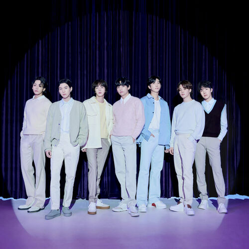
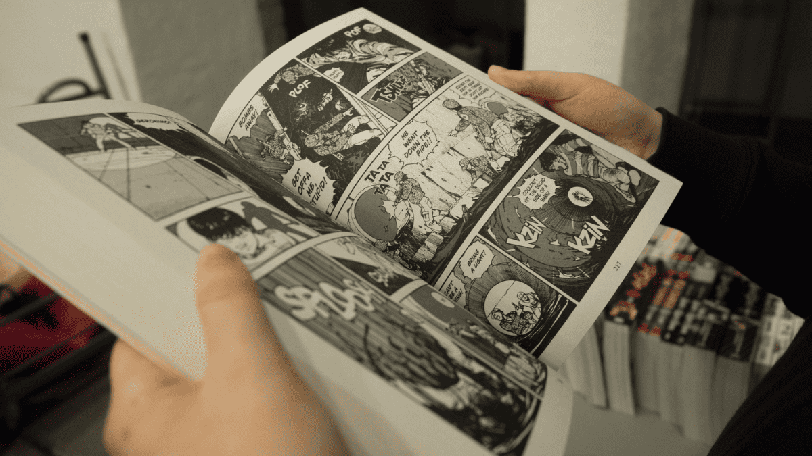

PORTFÓLIO PESSOAL
ALINE PÔRTO

SOBRE MIM
Tenho 32 anos, sou gaúcha, mãe de um menino. Sou cristã, me considero uma pessoa simples e humilde que sonha em proporcionar o melhor para si e para sua familia. Trabalho atualmenta na área comercial, estou cursando faculdade de ADS com o intuito de migrar para a área de tecnologia, pela qual sempre fui apaixonada. Já fiz alguns cursos básicos online, mas sinto que chegou o momento de fazer a faculdade e buscar uma colocação profissional nesta área.
HOBBIES
Gosto de assistir séries asiáticas, animes, ouvir kpop, jogar jogos, passear no shoping ou parque com meu filho, curto ler romances e mangás. Também gosto muito da culinária italiana. Gosto muito de aprender mais sobre tecnologia, sendo lendo ou estudando. Sou meio nerd, então tudo relacionado a esse gênero é algo que me fascina. Ainda sonho criar algo, um aplicativo ou software que seja de fato relevante. Tenho ideia de criar algo voltado para deficientes auditivos, usando a linguagem de sinais, libras ou algo do tipo para facilitar quem precisa de forma fácil e intuitiva. Como sou cristã e tenho muita fé, um app que levasse o evangelho para essas pessoas de forma inclusiva seria muito legal e gratificante.
Ouvir kpop
Ler mangás
Cozinhar
Passear

FORMAÇÃO EDUCACIONAL
BACHARELADO
Administração de Empresas - Anhanguera
PÓS GRADUAÇÃO
MBA Marketing e Vendas - Anhanguera
TECNÓLOGO
Análise e Desenvolvimento de Sistemas(cursando) - Uninter

LINGUAS ESTRANGEIRAS
INGLÊS BÁSICO - Learnet
INGLÊS(cursando) - Uninter

CONTATO
Feito por Aline Pôrto - 2025